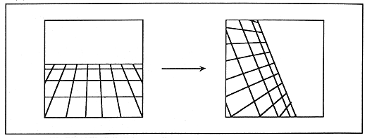

Return to previous page ｜ Return to menu ｜ Go to next page
- Figure 3.16 Image change by screen axis

-
- Since the rotation calculation is performed by the hardware according to the specified parameters, it is possible to display the rotation without putting too much load on the CPU. In addition, since the coordinates can be calculated by multiplying different values for each dot, images that are distorted can also be displayed.
-
- Simultaneous display with split screen
- With this function, it is possible to display an image that looks like two screens by simply displaying one scroll scroll surface.
- Scroll screen configuration
- The scroll screen has two screen formats: cell format and bitmap format. The cell format is a method of displaying cells side by side in the same way as a conventional home-use game machine, and the bitmap format is a method of displaying a picture corresponding to each dot on the screen, like a personal computer.
-
- The cell-type scroll screen has a picture pattern of 8 dots wide x 8 dots long, a “character pattern” in which cells are arranged, a “page” in which character patterns are arranged, and a “page” in which pages are arranged. It consists of a "plane" and a "map" with planes arranged. Figure 3.17 shows the configuration of the cell-type scroll screen.
Return to previous page ｜ Return to menu ｜ Go to next page